Please review the screens below and confirm the look, feel, and user journey. This document shows how the investor app will appear for new investors and already registered investors.
From welcome screen to account opening, waiting for approval, then full access after approval.
Dark premium welcome screen with United Securities branding, English / Arabic language toggle, and a short introduction to the investor app.
Clean login with mobile number entry (Oman +968). Factsheet and Prospectus removed from this screen — they appear only on the welcome / landing screen.
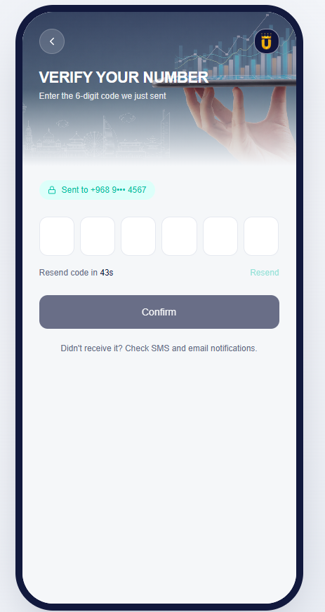
Investor enters the 6-digit code sent to their mobile. Timer and Resend options are shown. No “open an account” link on this screen — new vs existing user is handled automatically after verification.
First step of account opening for new investors. Progress bar shows 4 steps.
Collects legal identity details required to open an investment account.
Investor bank details for subscription payments and redemption payouts.
Summary of entered details with consent checkboxes before final submission.
Success confirmation after KYC is submitted. Investor gets a reference number and status.
Home screen while the investor waits for account approval. Status is clear; investing is locked.
Home shown right after approval when the investor has no holdings yet (just approved, or never subscribed).
Same home layout after the investor has subscribed and holdings are confirmed. Portfolio value and performance come from units × NAV (custodian data).
Same welcome and login → OTP → full Home immediately (no KYC, no waiting screen).
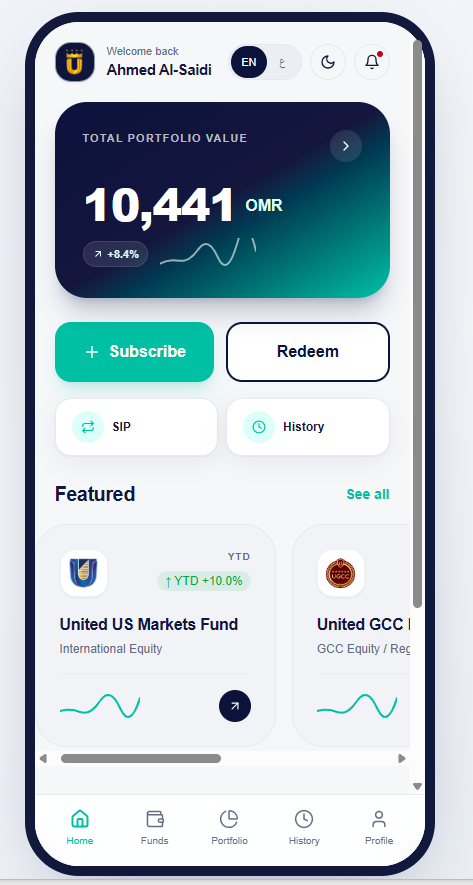
Same approved home: portfolio value, Subscribe / Redeem, SIP, History, and featured funds. Arabic remains available via the language toggle in-app.
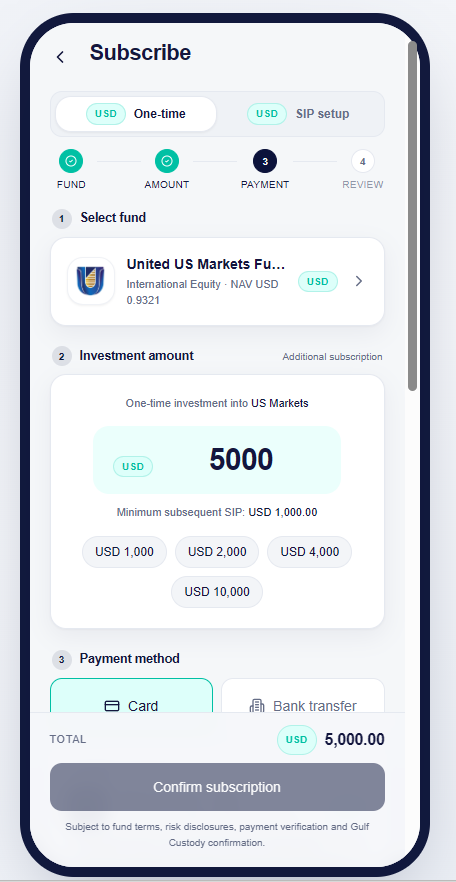
Step-by-step subscription: choose fund, amount, payment method, then confirm.
Confirms the order was placed and that a confirmation email / PDF will be sent to the investor.
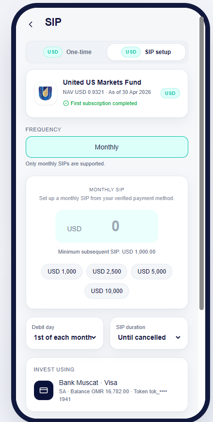
Original visual for creating a scheduled investment into a selected fund.
Investor sees all SIP mandates with status and next debit date.
Investor sets fund, amount, schedule, start, and optional end.
Investor manages one mandate — pause, resume, cancel.
Past scheduled debits with Success / Failed / Skipped and linked order refs.
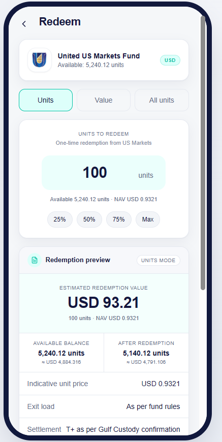
Investor redeems units / amount from an existing holding.
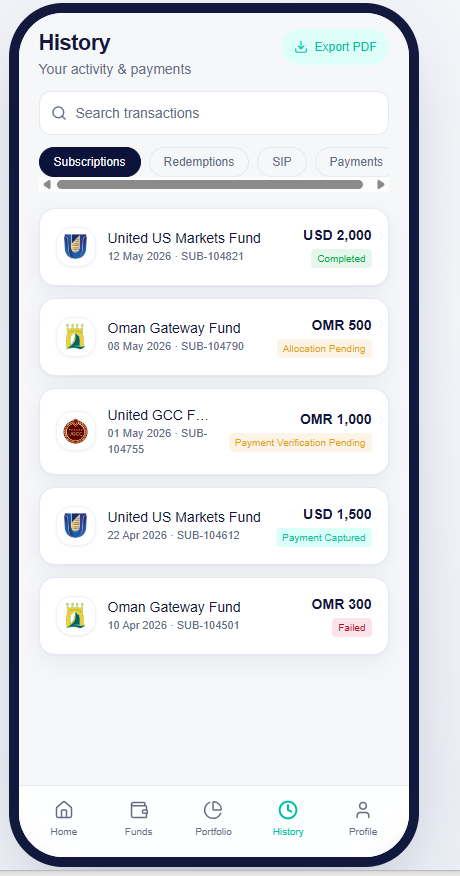
List of subscriptions, redemptions, and SIP runs with status.
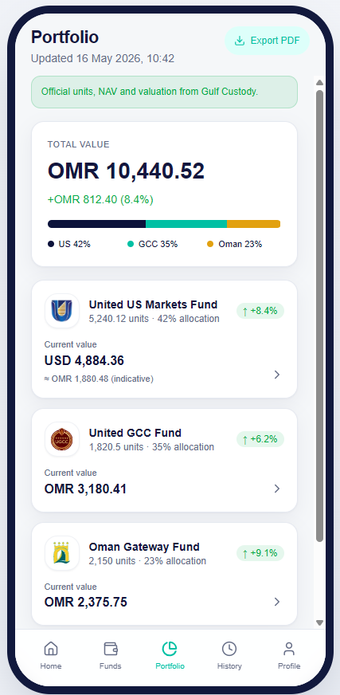
Holdings overview — value by fund, units, and performance.
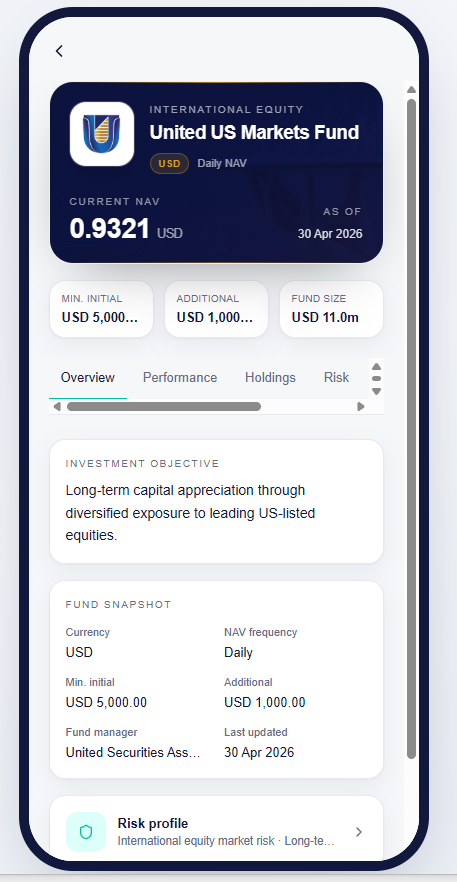
Fund overview with NAV, performance, risk, cut-off time, and links to documents.
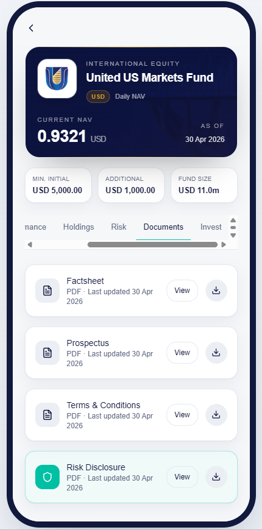
Factsheets, prospectus, and related investor documents for each fund.
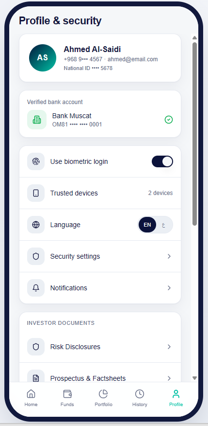
Investor profile, bank account, biometric login, language, and documents.
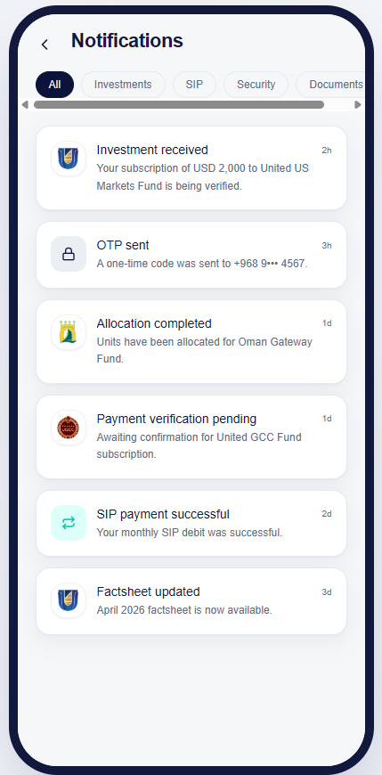
Inbox for order updates, NAV notices, and account messages.